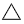
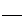
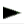
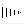
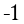

JChemPaint Tutorial
General Usage
The general idea is that while using JChemPaint, the program always is in a
"drawing mode". This means that clicks somewhere on the panel will draw a certain
chemical entity. Examples for "drawing modes" are "single bond" or "Carbon atom".
Drawing modes can be changed by the buttons or via menus. In
addition to changing the mode, choosing a button or a menu item do also changes
the currently selected items (if any). Context menus (which appear right clicking
on the panel) change the element (atom, bond) on which you clicked for the
menu. Apart from these "mode changes", there are also some buttons/menu items,
which do a one-off action, but have no mode. Examples are "Cut" or "Generate
Smiles". Keeping this in mind, we now show you how to create a molecule.
Another thing you should keep in mind is that JChemPaint is a "chemically aware
editor". This means that many things are not drawn, but assigned as properties
and then drawn by JChemPaint. The advantage is that import/exports to chemical
formats can be much richer, but the usage is sometimes not as straightforward
as with "direct" drawing. An example is if you want to have a title (like a name)
rendered next to a molecule: You do not draw a string on the canvas, but assign
the title to the menu and this is then rendered. Another example are reactions,
you do not draw an arrow, but declare molecules as products or reactants and
an arrow is then drawn between them.
Creating Molecules
When JChemPaint has been started, you automatically get an empty document.
In order to paint a structure the typical steps would be the following:
- Often it is the best to start with rings. Using the ring templates in
the button bar (, etc.) you can build the
ring structures of the molecule. Click on a ring button (you switched to "Draw
x-membered ring mode") and then in the document. You can dock a ring to another ring by clicking
on an existing ring (the docking atom or bond will be highlighted while hovering over it). If the molecule
has no rings, go to the next step.
- The next step are typically the chains. Choose the
 button (your are in "single bond mode" then), click on the atom where the chain
starts and then on the last atom of the chain to enlarge it. There are several
ways to draw bonds in this mode:
- Directly click on an atom: A bond with default length will be drawn at a reasonable angle.
- Drag from an atom: A bond with default length will be drawn at the angle to drag to. This makes it possible to exactly control the direction.
- Drag from an atom to another atom: A bond will be drawn linking the two atoms. This
way, you can also link fragments or close rings (for example, if you want a
large ring which is not in the templates).
- After this, you can add double/triple bonds by using
again and clicking on the bonds to make
double or triple. You can use  and
 to make existing bonds wedge bonds or
you can draw wedge bonds directly by clicking on an existing atom. The "wedge bond
mode" works same as the "single bond mode" with respect to dragging etc., just
that the bonds created are wedges.
- Finally the atoms need to be set. Either use one of the symbol buttons ("Element X mode") and
click on an atom to change it to this symbol. For single-letter elements, you can
also just hit the key while an atom is highlighted. So to set all the Oxygens in your
molecule, hover over the atoms one after the other and hit "O" each time.
You can also use the periodic
table to choose an element. With
and
 you can change the charge.
- If you want to have a title for your molecule right-click on any ator or bond,
choose "Molecule Properties" and enter the title.
Obviously the mentioned steps are only a suggestion.
You can do them in any order. Have a look through the menus to see what is available
or read the Reference Guide.
If you are interested in drawing reactions, see
Drawing of Reactions.